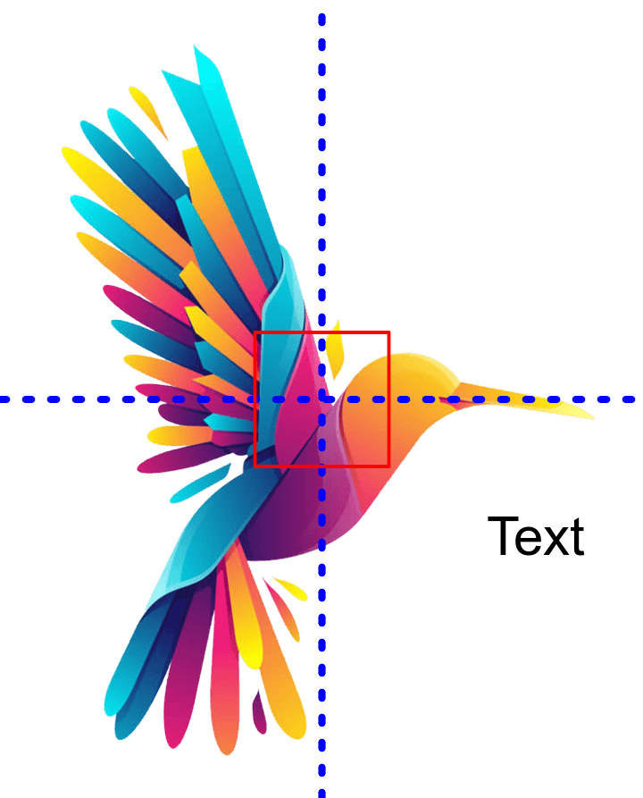

Esta es mi prueba 1

Desarrollo basado en plataforma
Linner Josue Zambrano Garcia
Adrien Diez Mendoza
Ir a la pagina de la utmBora bora
Isla principal caracterizada por su mar turquesa

Linner Josue Zambrano Garcia
Adrien Diez Mendoza
Ir a la pagina de la utmIsla principal caracterizada por su mar turquesa